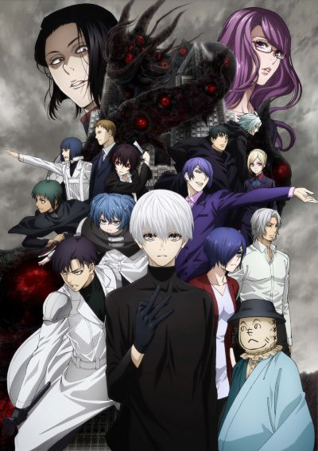

Dans la ville de Tokyo, des créatures nommées goules sont apparues et se nourrissent de chair humaine pour survivre. Un jour, Ken Kaneki, jeune étudiant, se fait attaquer par l'une d'entre elles et subit une grave blessure. Pour rester en vie, il reçoit une greffe de la goule qui l'a attaqué et devient un hybride, mi-humain mi-goule. Rapidement, il se rend compte qu'il ne peut plus manger les mêmes aliments qu'auparavant. Il entre alors au service du café « L’Antique », un repaire de goules, où il apprend à se nourrir sans faire de mal aux humains. Mais il va bien vite se retrouver au cœur d'une guerre sanglante entre le CCG (Centre de Contrôle des Goules), déterminé à retrouver et exterminer celles-ci jusqu'à la dernière et l'Arbre Aogiri, une organisation de goules sans merci.
Il découvre que les goules ne sont pas si différentes des humains, et peu à peu il va commencer à s'adapter.
Source 